So far, all of the indefinite sentinel loops you've looked at in the last chapter have been what are known as primed loops. In each case we've:
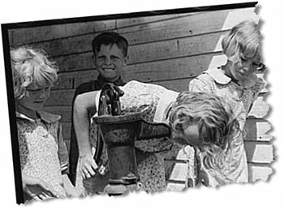
- set up the value of the variable
- tested the value against the sentinel in the loop condition
- processed the variable as needed in the loop body
- updated the variable's value at the end of the loop body
This works just fine, but it means that we have the exact same code, the code used to initialize our variable, in two places: before the loop and at the end of the loop.
The process of "reading a value" before the loop starts is known as "priming" the loop, similar to the way that a bucket of water is used to prime a hand-operated water pump, similar to the one in this photo by Russell Lee, from the Library of Congress' American Memory collection.
An inline Test
Because assignment is an operator in Java, and not a statement, there is a much shorter and more concise way to write the same kind of sentinel loop. A loop employing an inline test is an extremely common Java idiom, (and in C++ as well), and you should become familiar with it, even if you prefer the longer, more traditional primed loop.
Using an inline test, the loop in the PositiveMean program in
the last chapter, can be rewritten like this
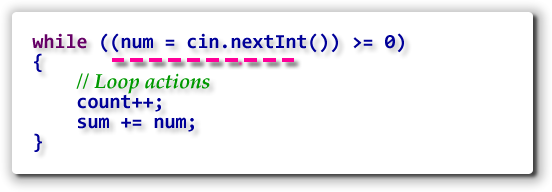
Now, you only have to initializenum once—during
the loop test—and not twice—before and at the end of the loop.
Note the additional set of parentheses surrounding
the assignment operation:
(num = cin.nextInt())
The parentheses are required because the precedence of the
relational operator (>=) is higher than the
precedence of the assignment operator. If you omit the
parentheses, Java will call the nextInt()
method and compare the number it returns with zero, generating a
boolean value. When it comes time to assign the
boolean value to the variable num,
however, Java will choke because num is an
int variable, and you cannot assign a
boolean value to an
int variable.
Intentional & Necessary Bounds
Sentinel bounds are often used to search for a particular value in a set of data, such as looking for a particular word or character in a document. When used like this, however, sentinel-controlled loops have one great failing: they can't ensure that the value will actually be found!
To handle this problem, you need to add an additional item to your loop-building toolkit—you must learn to differentiate between intentional and necessary bounds. Here's the difference.
Intentional Bounds
Suppose you want to search the String s
for the character stored in the char variables
named ch, and return the position where
the value is found. Using a simple sentinel loop you could write:
This bounds, s.charAt(i) != ch, is your intentional
bounds, it is the sentinel value that will end your loop if
all goes well.
Necessary Bounds
You can't just assume that all will go well, however. It is possible that:
- the character stored in
chmight not occur in theString s, or ... - the
String smay have no characters
The bounds used to handle these kinds of conditions
are called the necessary bounds. Writing the necessary
bounds for a loop almost always involves writing a compound
boolean condition using the logical operators.
In this example, we can handle the first necessary
bounds by changing the loop condition like this:
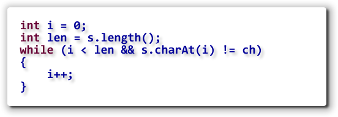
Adding necessary bounds to a loop condition means that the loop can end for two (or more) reasons, not just one. When you write the loop postcondition statements, you have to take this into account. For instance, after this loop terminates, you can determine
whether the character stored in ch was found by
checking the value of i and len.
If i == len, then the character stored in
ch
was not found in the String s, because the
loop must have exited when it encountered the first
condition.
Other Necessary Bounds
Whenever you set up the initial bounds for a loop, you always need to ask yourself another question: "Have I considered every possibility? Will this loop always end, no matter what?"
If you can think of an input value or situation where the loop may not end, then you must add an additional, necessary bounds, for that situation.
Here are some of the situations that may require necessary bounds:
- As you just saw, if you are using a sentinel as the loop bounds, there are situations where the sentinel may not appear.
- When you are repeating a calculation that gets closer and closer to an approximate limit, you may want to limit the number of repetitions.
- If you don't know that an answer actually exists, you might want to limit the amount of time spent trying to find it.
- You might not be sure of the reliability of your data and might want to provide a fail-safe exit if the data doesn't live up to your expectations.
A Termination Checklist
Remember, the most important part of writing a loop is making sure that it terminates correctly. To do that, you should have a mental checklist to make sure that it always ends, and, that it ends correctly.
There are different things you have to look for, depending
on how your loop is controlled. So far, we've looked at
counter-controlled loops (using both for and
while) and sentinel loops. Here are
the things you need to check for, (from Doug Cooper's
Treatise On Loops).
Counter-Controlled Loops
- Is there an upper limit on the number of iterations? Should there be?
- Are you counting the right thing?
- Can a partial result "blow up" as you approach the limit?
(Consider a counted loop that goes from
1toInteger/MAX_VALUE / 2that stores the sum of the numbers in anintvariable).
Sentinel-Controlled Loops
- Is there a sentinel?
- Is there more than one sentinel?
- What will you do if the sentinel doesn't show up?
- Should you be watching for a "just-in-case" sentinel? For instance, if you are summing numbers and you discover characters in input, what do you do?
Flag Controlled Loops
 A flag-controlled loop uses a
A flag-controlled loop uses a boolean
variable to control the loop. Inside the loop body, you'll
use and if-else to set the flag or
to process the data, depending on the results of
your calculation.
As with the inline test that began this chapter, the flag-controlled loop allows you to avoid having multiple input statements: one before the loop condition, and another at the end of the loop body to set things up for the next iteration.
Using a flag allows you to reorder the test condition for a sentinel loop into a form that is sometimes known as a loop-and-a-half. The illustration shows the general form for a flag-controlled loop.
The GuessOMatic
Let's look at a simple illustration program that uses a
flag-controlled sentinel loop. You can find
GuessOMatic.java in this chapter's code folder.
Our program will guess
a number between 1 and 100 and you'll try to guess it.
 If you don't guess the number, then the GuessOMatic will tell
you whether you were high or low, and give you another chance
to make a killing. Of course, since you missed the first time,
you won't get the full $2*, but "only" $1.75*. But hey, since
you only put in a buck, that means you've almost doubled your
investment!
If you don't guess the number, then the GuessOMatic will tell
you whether you were high or low, and give you another chance
to make a killing. Of course, since you missed the first time,
you won't get the full $2*, but "only" $1.75*. But hey, since
you only put in a buck, that means you've almost doubled your
investment!
If you miss your second chance the GuessOMatic points you toward the correct answer, extracting a mere $.25* for the hint and for the wear and tear on this old program. Don't be discouraged; that means you still made $ .50* more than you paid. At this rate you'll be a millionaire in no time at all, can forget about CS 170, and retire to Hawaii!
* All amounts are virtual amounts, paid in the Zipoid currency. U.S. cash value is 0.
A Sample Run
Here's what the program looks like when it runs. Notice that
even though I only paid a dollar to play, the running prompt
lets me know what the payout will be if I guess the number
on that try. I'm not very lucky, but I broke even on this first run:
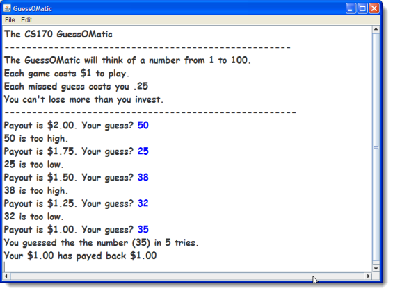
The Code
Here's how the GuessOMatic works. I'm only going to show
you the code for the run() method. You should
be able to figure out the init()
procedure on your own.
Before the Loop
Before the loop starts, we need create some variables:
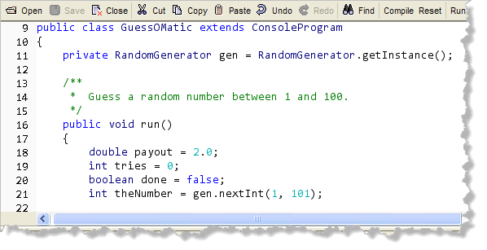
The variables we need are:- payout, hard-coded to $2.00. Assumes you've already given me the $1.00 to play the game.
- tries will be used to count the number of guesses that you needed.
- done is the
boolean flag variable that we'll use to control the loop. - theNumber is a random number (selected using
the ACM
RandomGeneratorclass and itsnextInt()method) between 1 and 100.
In addition, I've created the RandomGenerator
instance variable gen so that the program can
generate the random numbers it needs.
Inside the Loop
The loop starts with the flag-controlled bounds.
Since we set the done flag to
false when it was intialized, we'll always
enter the loop the first time.
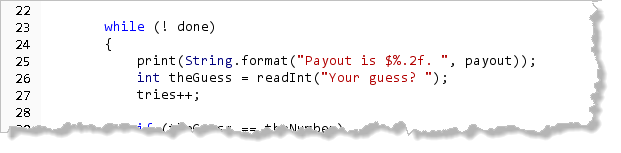
After the loop bounds, the program:- prints the current payout amount and asks the user for
their current guess. Note the use of
String.format()to display the numeric output amount. - reads the guess using the
readInt()function from theConsoleProgramclass. - increments the number of attempts that the user has made.
Below this, is the if statement, used to
control the flag. If the user's guess is equal to the
number, then the flag done is set to true:
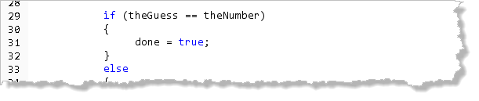
If the guess is incorrect, then we drop into theelse
portion of the loop, shown here: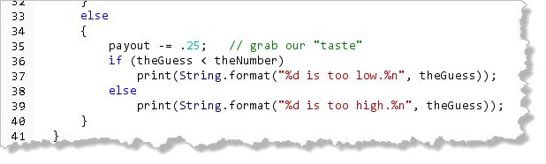
Inside the "working" portion of the loop we:- subtract the "vig" for the missed guess.
- use a nested
if-elsestatement to print a "too-high: or "too-low" message.
The else portion ends the loop, and it returns
up to the while statement on line 23, where, if
the done variable was set to true on this
iteration, the loop ends. If the else portion
was executed instead, then the user is asked for another
number.
After the Loop
Eventually, (hopefully?), the user will guess the correct number and exit
the loop. When that happens, the program prints a pair of
error messages:
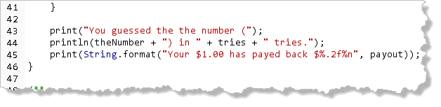
The messages display both the number guessed by the computer, (which is, of course, the same as the last number guessed by the user), the number of tries, and the total payout.Improvements
There are several things that can be done to improve the GuessOMatic. I'd like you to complete these fixes. Probably the biggest one is that, (unlike its advertising), the actual program does let the user "go in the hole", since the loop only exits when the correct number is guessed.
Of course, you've already learned how to fix that:
Add a Necessary Bounds Condition!
We can do that by checking both the flag and the payout
amount. When payout reaches zero, then we stop.
Here's what the improved loop looks like with this
necessary bounds added:
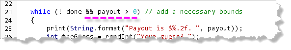
Of course, that creates a little problem with the messages
after the loop, doesn't it?
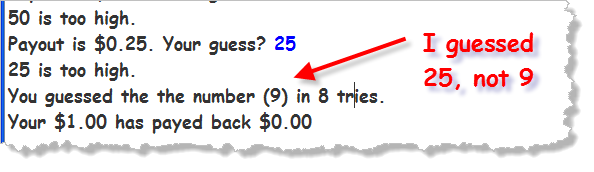
Remember that after a loop, we need to check the post-condition to see if the loop ended because we met the goal (that is, the user guessed the correct number), or, because we ran up against a limiting bounds condition, like running out of money. To fix the post-condition problem, we need to check the
value of payout and print a different message,
like this:
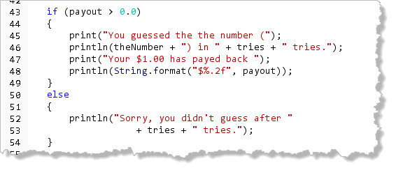
Of course if the user can't guess after eight tries (when all of the payout money is exhausted), they may not be able to figure out that they are out of money either, so you might need a more explicit message.Try It Yourself
Go ahead and complete these two changes to the GuessOMatic program. Compile and run it twice: once trying to win (so you see the first message), and once putting in the same value (so you run out of money and see the second message).
Bottom-Testing
In addition to the for and while loops,
Java also has a loop that performs its boolean test
after the loop body, instead of before. This loop, the
do-while loop illustrated here,
will always execute the statements inside its body at least once.
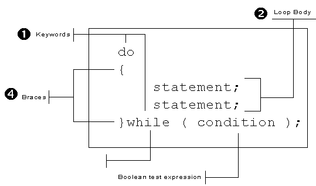
The body of thedo-while loop appears
between the keywords do (which precedes the
loop body) and while. Like all loops, the body of
the do-while loop can be a single
statement, ending with a semicolon, or it can be a compound
statement enclosed in braces. As with the other loops, you'll
have a more fulfilling life if you train yourself to always use
a compound (brace-delimited) loop body.
The do-while loop's boolean
condition follows the while keyword. As with
all selection and iteration statements in Java, the
boolean condition must be enclosed in parentheses,
which are part of the statement syntax. In the
do-while loop, the boolean
condition is followed by a semicolon, unlike the while
loop, where following the condition with a semicolon can
lead to subtle, hard to find bugs.
The do-while loop is often employed
by beginning programmers, because, for some reason, it seems
more natural. If you find yourself in this situation, however,
you should think twice. 99% of the time, a while
loop or a for loop can be employed to better effect
than using a do-while. In fact, except
for salting your food...
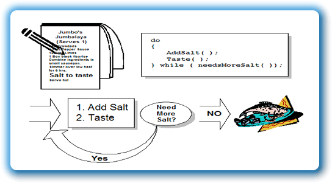
which should always be done before tasting, there are relatively few other situations where a test-at-the-bottom strategy is superior to "looking before you leap."GuessOMatic II
One application of a do-while loop is an
ATM-type situation. You've got your money or made your
deposit, and, instead of giving you your card back, the
machine asks you "Do you want another transaction?".
This is easily handled with a do-while loop.
Let's employ this technique to make the GuessOMatic more
like its Vegas cousins. When we start the game, we'll ask
the user for a deposit. Then, at the end of each game,
we'll let them cash out, deposit more money or play again.
Begin by saving your finished GuessOMatic (from the previous exercise) to a new file (GuessOMatic2.java). Be sure to change the class name when you do that. Then make these changes.
The do-while Loop
Start by "wrapping" all of the existing code in the
GuessOMatic run() method
in a do-while loop, starting at the line
marked (1) in this picture:
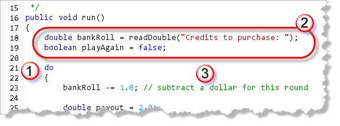
Before the new loop (in the section marked (2)):- Create a
doublevariable,bankRolland initialize it by asking for an initial deposit. (I'll leave writing the code to put the charge on the player's MasterCard as an "exercise for you, the reader".) - Create a
booleanvariable namedplayAgainand initialize it tofalse.
Inside your new do-while loop, at the very top,
(right before the existing
initialization statements), subtract the dollar from the
bankroll for playing the game. This is marked (3) in the picture.
At the end of the loop, use the playAgain
variable as the flag bounds
in the while portion of your do-while
loop, like this:
 Then, after the loop, print a "Thank You" message along with the
value of the player's bankroll.
Then, after the loop, print a "Thank You" message along with the
value of the player's bankroll.
Controlling the do-while Loop
Inside the very end of your do-while loop,
you'll place the code that controls the next repetition of the game,
after the existing code and before the while
condition that ends the loop:
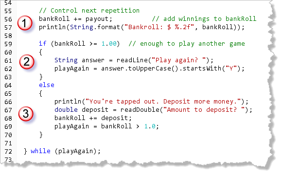
Here's what our code needs to do:- First, we need to add the winnings (if any) back to the user's bankroll.
- Next, we have two possibilities. If they still
have enough money left to play another game, ask them if
they want to continue. Store the result in a
Stringvariable. Then, use that variable to initialize theplayAgainflag variable. I'm assuming they'll enter something that starts with a "Y" to continue. - If they don't have enough money to play again,
we don't want to just drop them out. Instead, ask them
to deposit some more money. Then, set the
playAgainflag using the Boolean expressionbankRoll > 1.0.
Try It Yourself
Go ahead and complete the GuessOMatic2 program. Compile and run. Play a couple of games.

Indefinite Loops Summary
- A sentinel loop that "reads" before the loop test to set up the loop, and then "reads again" at the bottom of the loop to set up the next iteration, is known as a primed loop.
- Java permits both a "read" and a test by placing both inside the parentheses of the loop condition. This is known as an inline test. While more concise than a primed loop, it is often not as readable.
- Many sentinel loops require you to add additional tests to account for unforeseen circumstances. These additional conditions are known as necessary bounds, while the original sentinel condition is known as an intentional bounds.
- When writing loops, always use a termination checklist to make sure you have included all possible terminating conditions, and that you've added the required necessary bounds.
- A flag-controlled loop uses a
booleanvariable to control a sentinel loop. With a flag-controlled loop, you only need one read statement, followed by anif-elsestatement that sets the flag totrueif the bounds is reached, and processes the input normally otherwise. - The
do-whileloop tests its condition after executing the body of the loop. Use this when you have a "do you want to do it again" type situation.